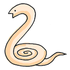

◆クンダリニーの覚醒が、解脱・悟りへの第一歩
クンダリニーの覚醒。それは、解脱・悟りへのはるかな道を歩み出す、その最初の一歩にほかならない。
クンダリニーとは、すべての人間の尾てい骨に眠っている内なるエネルギーのこと。人間の精神を高い次元へと押し上げる力を有している。
すべての人間がこのエネルギーの源を持っているが、通常は眠った状態にあるためその恩恵にあずかることはほとんどない。
しかし、正しい修行によってクンダリニーを覚醒させることができれば、わたしたちは、人間の限界を超えた様々な神通力（超能力）を得るだけでなく、最終的には解脱・悟りに到達することができるのだ。
|
クンダリニーは、7つの霊的センターであるチァクラを貫いて上昇し、サハスラーラへと到達する。
クンダリニーが覚醒すると、スシュムナー管というクンダリニーの道を上昇していく。 |
|
|
 クンダリニーは尾てい骨に、蛇がとぐろを巻くような形で眠っている。 |
◆クンダリニーが覚醒すると、尾てい骨から頭頂へ上昇する
クンダリニーの存在は、現代医学によって証明されるものではない。だが、ヨーガや密教においてはその存在は常識であり、エジプトの古代遺跡にも、蛇の形をしたクンダリニーが表現されている。
そして内なるエネルギー、クンダリニーはわたしたちの身体に大きな影響を与えることができる。つまり、クンダリニーは精神的エネルギーであると同時に、肉体的エネルギーでもあるのだ。
修行によってクンダリニーが覚醒すると、背骨に沿って存在するスシュムナー管というエネルギーの通り道を上昇し、七つのチァクラを貫いて頭頂へと至る。
◆困難なクンダリニー覚醒も、正しい修行によって楽々達成
クンダリニーは、普通はどんなに頑張って修行しても独力で覚醒させるのは難しい。しかも、莫大なパワーを持っているだけに、間違ったやり方で覚醒させると、とんでもない結果をもたらすこともある。
しかし、正しい修行体系にのっとって修行を進めれば、最も危険の少ない方法で、だれでも確実にクンダリニーを覚醒させることができるのだ。
| 古今東西の宗教で認められてきたクンダリニー
クンダリニーは、実は数千年も前から世界中の宗教において、その存在が認められてきた。クンダリニーの本場といえば、まずインド。そもそも「クンダリニー」という言葉自体が古代インド語のサンスクリット語「クンダラ（螺旋）」と「クンド（燃える）」に由来している。 |